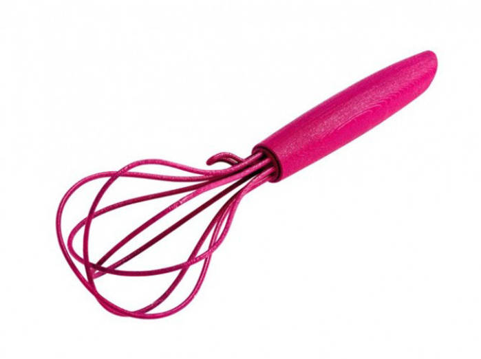
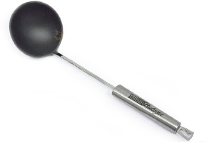
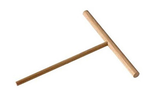
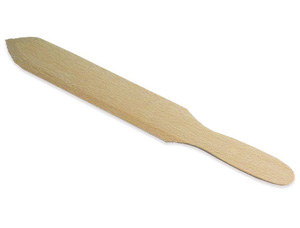

BilligPrix: 30herminesIdéal pour vos galettes et vos crêpes, Billig ne vous quittera plus. Jamais.

FouetPrix: 5herminesCe magnifique fouet (l'ustensile de cuisine, pas l'autre...) mélangera vos pâtes à crêpes à la perfection !

Louche à crèpesPrix: 5herminesPour réussir vos crêpes, il vous faudra impérativement cette louche de grande qualité, parce que non, on ne verse pas la pâte directement sur Billig !

Râteau pour crêpière rondePrix: 7herminesPour magnifiquement répartir la pâte, cette spatule vous sera tout bonnement indispensable !

Spatule à crêpesPrix: 8herminesEt hop ! On retourne la crêpe avec une facilité sans bornes avec une spatule comme celle-là !